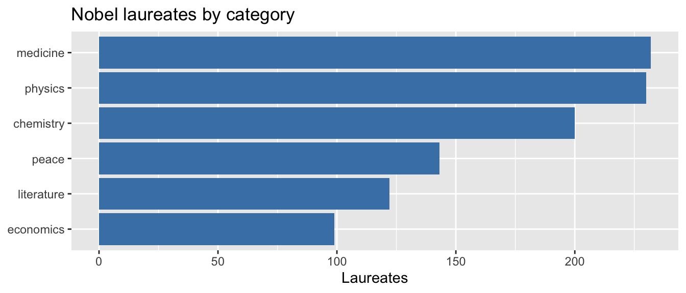
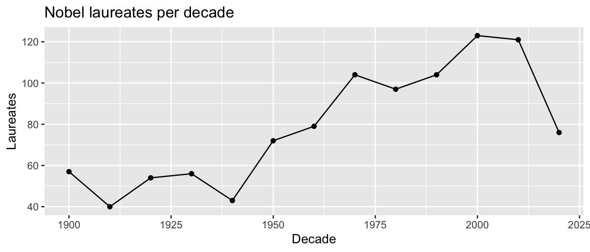
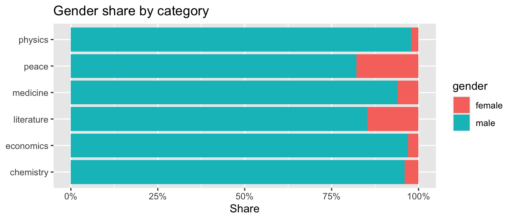
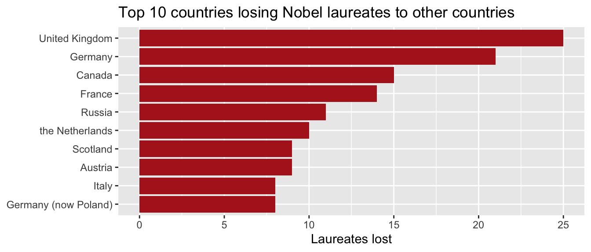

library(tidyverse)
library(jsonlite)
# Pull both endpoints once
prizes_raw <- fromJSON("http://api.nobelprize.org/v1/prize.json",
simplifyVector = FALSE)
laureates_raw <- fromJSON("http://api.nobelprize.org/v1/laureate.json",
simplifyVector = FALSE)10b-more-json-practice-with-nobelprize-org
Introduction
This assignment uses the public Nobel Prize API (v1) at http://api.nobelprize.org/v1/. Two JSON endpoints are consumed:
prize.json— one record per prize (year + category) with nested laureateslaureate.json— one record per laureate with nested prizes and affiliations
Both are pulled, flattened into tidy data frames, and used to answer four questions below.
Tidy the prize data
Each prize has a list of laureates, so we unnest it into one row per laureate-prize.
prizes_df <- tibble(prize = prizes_raw$prizes) |>
unnest_wider(prize) |>
mutate(year = as.integer(year)) |>
unnest_longer(laureates) |> # one row per laureate on each prize
unnest_wider(laureates) |>
filter(!is.na(id)) # drop years with no laureates (e.g., war years)
glimpse(prizes_df)Rows: 1,026
Columns: 8
$ year <int> 2025, 2025, 2025, 2025, 2025, 2025, 2025, 2025, 2025…
$ category <chr> "chemistry", "chemistry", "chemistry", "economics", …
$ id <chr> "1053", "1054", "1055", "1058", "1059", "1060", "105…
$ firstname <chr> "Susumu", "Richard", "Omar M.", "Joel", "Philippe", …
$ surname <chr> "Kitagawa", "Robson", "Yaghi", "Mokyr", "Aghion", "H…
$ motivation <chr> "\"for the development of metal–organic frameworks\"…
$ share <chr> "3", "3", "3", "2", "4", "4", "1", "1", "3", "3", "3…
$ overallMotivation <chr> NA, NA, NA, "\"for having explained innovation-drive…Tidy the laureate data
laureates_df <- tibble(l = laureates_raw$laureates) |>
unnest_wider(l) |>
mutate(id = as.character(id))
# One row per (laureate, prize) with affiliation info for Q4
lp_df <- laureates_df |>
select(id, firstname, surname, gender, bornCountry, prizes) |>
unnest_longer(prizes) |>
unnest_wider(prizes, names_sep = "_") |>
mutate(prize_year = as.integer(prizes_year))
glimpse(lp_df)Rows: 1,026
Columns: 12
$ id <chr> "1", "2", "3", "4", "5", "6", "6", "8", "9", …
$ firstname <chr> "Wilhelm Conrad", "Hendrik A.", "Pieter", "He…
$ surname <chr> "Röntgen", "Lorentz", "Zeeman", "Becquerel", …
$ gender <chr> "male", "male", "male", "male", "male", "fema…
$ bornCountry <chr> "Prussia (now Germany)", "the Netherlands", "…
$ prizes_year <chr> "1901", "1902", "1902", "1903", "1903", "1903…
$ prizes_category <chr> "physics", "physics", "physics", "physics", "…
$ prizes_share <chr> "1", "2", "2", "2", "4", "4", "1", "1", "1", …
$ prizes_motivation <chr> "\"in recognition of the extraordinary servic…
$ prizes_affiliations <list> [["Munich University", "Munich", "Germany"]]…
$ prizes_overallMotivation <chr> NA, NA, NA, NA, NA, NA, NA, NA, NA, NA, NA, N…
$ prize_year <int> 1901, 1902, 1902, 1903, 1903, 1903, 1911, 190…Question 1: Which category has awarded the most Nobel Prizes?
A simple count of laureates by category.
q1 <- prizes_df |>
count(category, sort = TRUE)
q1# A tibble: 6 × 2
category n
<chr> <int>
1 medicine 232
2 physics 230
3 chemistry 200
4 peace 143
5 literature 122
6 economics 99ggplot(q1, aes(reorder(category, n), n)) +
geom_col(fill = "steelblue") +
coord_flip() +
labs(x = NULL, y = "Laureates", title = "Nobel laureates by category")
Question 2: How has the number of laureates per decade changed over time?
q2 <- prizes_df |>
mutate(decade = (year %/% 10) * 10) |>
count(decade)
ggplot(q2, aes(decade, n)) +
geom_line() + geom_point() +
labs(x = "Decade", y = "Laureates",
title = "Nobel laureates per decade")
q2# A tibble: 13 × 2
decade n
<dbl> <int>
1 1900 57
2 1910 40
3 1920 54
4 1930 56
5 1940 43
6 1950 72
7 1960 79
8 1970 104
9 1980 97
10 1990 104
11 2000 123
12 2010 121
13 2020 76The count rises over time, reflecting the modern practice of splitting prizes among multiple laureates.
Question 3: What is the gender distribution within each category?
This joins laureate-level gender with prize-level category.
# Join gender from laureates_df onto prizes_df by laureate id
q3 <- prizes_df |>
mutate(id = as.character(id)) |>
left_join(select(laureates_df, id, gender), by = "id") |>
filter(gender %in% c("male", "female")) |> # drop organizations
count(category, gender) |>
group_by(category) |>
mutate(pct_female = round(100 * n[gender == "female"] / sum(n), 1)) |>
ungroup()
q3# A tibble: 12 × 4
category gender n pct_female
<chr> <chr> <int> <dbl>
1 chemistry female 8 4
2 chemistry male 192 4
3 economics female 3 3
4 economics male 96 3
5 literature female 18 14.8
6 literature male 104 14.8
7 medicine female 14 6
8 medicine male 218 6
9 peace female 20 17.9
10 peace male 92 17.9
11 physics female 5 2.2
12 physics male 225 2.2ggplot(q3, aes(category, n, fill = gender)) +
geom_col(position = "fill") +
scale_y_continuous(labels = scales::percent) +
labs(x = NULL, y = "Share", title = "Gender share by category") +
coord_flip()
Peace and Literature have the highest share of female laureates; Physics and Economics have the lowest.
Question 4: Which country has “lost” the most laureates?
The advanced question: find laureates born in one country but affiliated with a different country at the time of the award. This requires unnesting prize affiliations and comparing against born country.
# Unnest affiliations inside each prize
brain_drain <- lp_df |>
select(id, bornCountry, prize_year, prizes_category, prizes_affiliations) |>
unnest_longer(prizes_affiliations) |>
unnest_wider(prizes_affiliations, names_sep = "_") |>
rename(affil_country = prizes_affiliations_country) |>
filter(!is.na(bornCountry),
!is.na(affil_country),
nzchar(bornCountry),
nzchar(affil_country),
bornCountry != affil_country) |>
distinct(id, bornCountry, affil_country) # one row per laureate move
q4 <- brain_drain |>
count(bornCountry, sort = TRUE) |>
slice_head(n = 10)
q4# A tibble: 10 × 2
bornCountry n
<chr> <int>
1 United Kingdom 25
2 Germany 21
3 Canada 15
4 France 14
5 Russia 11
6 the Netherlands 10
7 Austria 9
8 Scotland 9
9 Germany (now Poland) 8
10 Italy 8ggplot(q4, aes(reorder(bornCountry, n), n)) +
geom_col(fill = "firebrick") +
coord_flip() +
labs(x = NULL, y = "Laureates lost",
title = "Top 10 countries losing Nobel laureates to other countries")
Germany (Germany and Germany (now Poland)) tops the list — largely because many scientists born in the pre-war German Empire were affiliated with U.S. or U.K. institutions by the time they won, reflecting the 20th-century migration of scientific talent.
Summary
| # | Question | Answer |
|---|---|---|
| 1 | Most-awarded category | Medicine / Physics (largest counts) |
| 2 | Laureates per decade | Rising trend, peaking in recent decades |
| 3 | Gender balance | Peace & Literature most balanced; Physics least |
| 4 | Biggest “brain drain” | Germany |